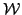

Preconditioned iterative methods in nonstandard inner products for saddle point systems have recently received attention. Krzyzanowski (Numer. Linear Algebra Appl. 2011; 18:123-140) identified a two-parameter family of preconditioners in this context and Stoll and Wathen (SIAM J. Matrix Anal. Appl. 2008; 30:582-608) proposed combination preconditioning, where two different preconditioners--for each of which the preconditioned saddle point matrix is self-adjoint with respect to an inner product--can be blended to create additional preconditioners and associated bilinear forms or inner products. If a preconditioned saddle point matrix is nonsymmetric but self-adjoint with respect to a nonstandard inner product a MINRES-type method (

-PMINRES) can be applied in the relevant inner product. If the preconditioned matrix is also positive definite with respect to this inner product a more efficient CG-like method ( -PCG) can be used reliably.In this talk we provide explicit expressions for the combination of certain Krzyzanowski preconditioners. We additionally give an example of the rather counterintuitive result that the combination of two preconditioners for which only -PMINRES can be reliably used can lead to a preconditioner for which, for certain parameter choices, -PCG is applicable. That is, the resulting preconditioned saddle point matrix is positive definite with respect to an inner product. We show that this combination preconditioner outperforms either of the two preconditioners from which it is formed for a number of test problems.